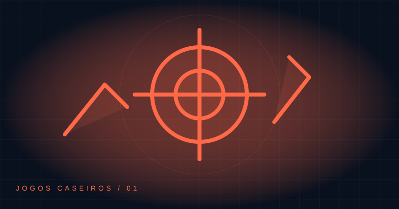

INDEPENDENTES POR NATUREZA
Pequenos jogos.
Grandes desafios.
Feitos em casa. Prontos para jogar.
Descubra seu próximo desafio e divirta-se no navegador.
12 jogos para descobrir4 maneiras de se desafiar

EM DESTAQUE01 / 12
AÇÃO
Combate!
Jogar agora ↗SUA PRÓXIMA PARTIDA COMEÇA AQUI
Explore a coleção12 jogos
Nenhum jogo encontrado
Tente outro nome ou explore todas as categorias.
FAÇA PARTE DA PRÓXIMA FASE
Um pequeno apoio.
Novas possibilidades.
Apoie o desenvolvedor enviando um PIX de qualquer valor. Qualquer ajuda é bem-vinda.
Nos próximos jogos farei homenagens a quem nos apoiar.
Wagner MoreiraDesenvolvedor de Jogos Caseiros
APOIE VIA PIX
Obrigado por jogar junto.
Abra o app do seu banco e escaneie o QR Code.